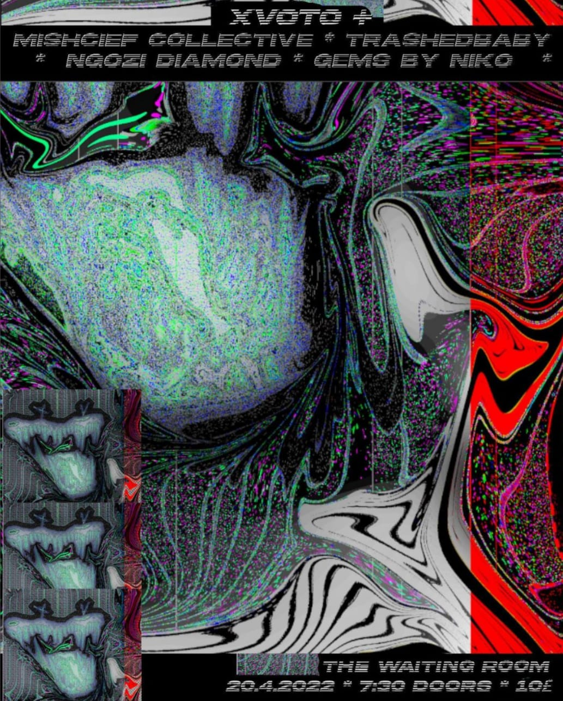

Rat Feast - the Waiting room
As supporting act for the band XVOTO - Mischief (Jasmine Imren, Lizzi Tingle, Rory Bakker-Marshall, Amy Sheldon, Jade Zaheer) performed 'Rat Feast' at the Waiting Room, wearing GoPros for animalistic documentation from the perspective of our rat selves.
